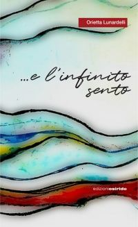
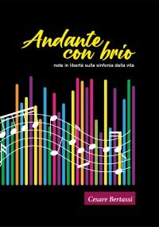
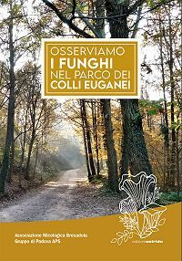
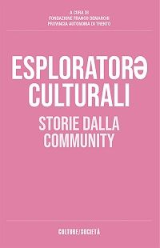
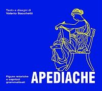
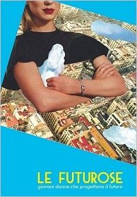

Rovereto
EDIZIONI OSIRIDE
Libri di storia, di territorio, di racconti e di funghi
Le ultime pubblicazioni si ordinano con un'email: scrivete l'indirizzo e il libro arriva a casa. Le spese di spedizione sono gratuite.
Le ultime pubblicazioni
Storia del Trentino, paesaggio, racconti, poesia, micologia, e i libri fatti con le associazioni e le fondazioni del territorio. Spese di spedizione gratuite.
- Dal Simonino ad AuschwitzLa tragica odissea degli Ebreidi Luigi Sardi15 × 21 cm, 304 pagine, 2025Ordina
- L’Angolo delle occasioni 3.0di Silvia Allegri e Susanne Probst14 × 20 cm, 160 pagine, 2025Ordina

…e l’infinito sentoviaggiando sulle onde dell’animadi Orietta LunardelliOrdina- Matteotti raccontato da Degasperidi Luigi SardiOrdina
- La VallarsaIl paesaggio geograficodi Ludmila Vesely Leonardi21 × 28 cm, 112 pagine, 2024Ordina
- I libri ‘perduti’ di Girolamo Tartarottidi Giuseppe Maria GottardiOrdina

Andante con briodi Cesare BertassiOrdina- Il viaggiatore anonimodi Antonio MalossiOrdina
- I me tempidi Ierta Dossi PozzerOrdina
- Abbiamo fatto quello che andava fattoSuor Giovanna Mosna nella Resistenza al Niguarda di Milanoa cura di ANPI TrentoOrdina
- I have a dreamGiovani e cinemaFondazione Franco Demarchi, interviste di Francesca FattingerOrdina

Osserviamo i funghi nel Parco dei Colli EuganeiAssociazione Micologica Bresadola, Gruppo di PadovaOrdina
Esploratorə culturaliStorie dalla communityFondazione Franco Demarchi, a cura di Federico OselliniOrdina- Zuzzurellonamentissimamentesogni e vicende umane in ordine alfabeticodi Elina MassimoOrdina

ApediacheFigure retoriche e capricci grammaticalidi Valerio SacchettiOrdina- I primi 50 anni della Compagnia di Lizzana1972-2022a cura di Marisa BruschettiOrdina

Le FuturoseGiovani donne che progettano il futurodi Milvia Argenti, Patrizia Belli, Fausta Cassiti e Paola GiudiciOrdina- Guida introduttiva al genere Cortinarius in Europadi Federico Calledda, Emanuele Campo, Marco Floriani e Riccardo MazzaOrdina
- Theo SolveigBensalem 2052di Giorgio Ragucci BruggerOrdina
Come si ordina
- Toccate «Ordina» sotto il libro: si apre un'email già indirizzata a info@edizioniosiride.it.
- Scrivete l'indirizzo dove volete ricevere il libro.
- Il libro arriva a casa, e la spedizione non si paga.
comunicare letteratura
L'annale comunicare letteratura è una collana di volumi che promuove il dialogo tra le culture e le lingue europee.